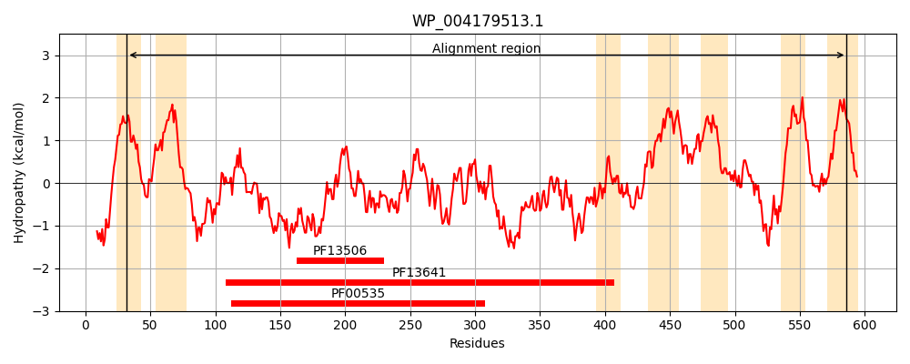
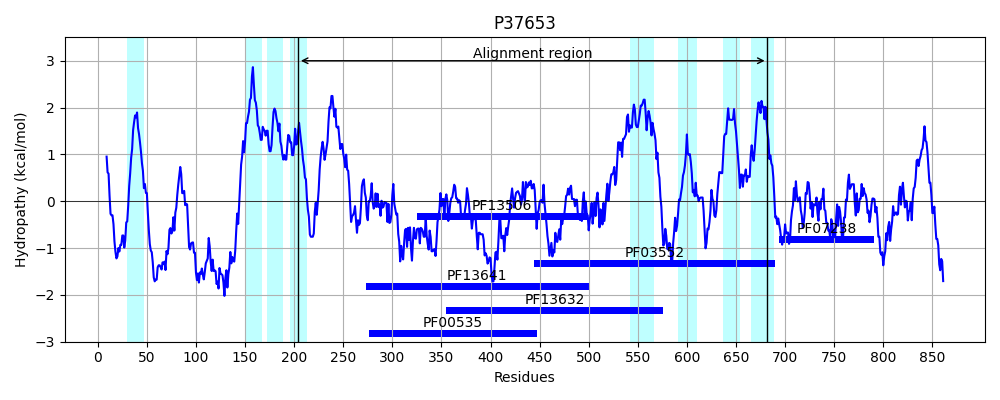
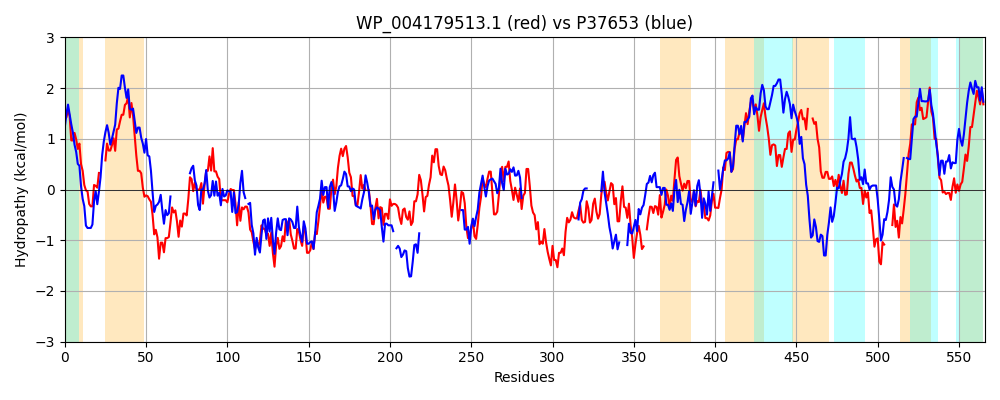

Hit Accession: P37653
Hit TCID: 4.D.3.1.6
Hit Description: gnl|BL_ORD_ID|10123 gnl|TC-DB|P37653|4.D.3.1.6 Cellulose synthase catalytic subunit [UDP-forming] OS=Escherichia coli (strain K12) GN=bcsA PE=1 SV=3
Mach Len: 566
e:0.000000
Query TMS Count : 7
Hit TMS Count: 8
TMS-Overlap Score: 1.900000
Predicted Substrates:CHEBI:3529;(1->4)-beta-D-glucan
BLAST Alignment:
Score: 313 , Bit scores: 125 bits, E-value: 6.7e-30, Alignment length: 566, Percentage identity: 24
Query: 32 VAALVLGANYIYWRWTASLNTD---ALWYAIPLVLAETLAWIGTVLFTINLWQEKDPPPGVPPTEINDCLRADEAVESRPIKVDLFIATYSEDVELVRLSIRDAMQMTYPGPLDYKVHVLDDGRRPEMKAVCEQEGANYITRQSNIGYKAGNLRNGLEHTDGDFLIICDADTRVFPTLLSHTLGYF-RDPDVAWVQTPQWFFDLPEGEDLACWLRRKAGGAGYGVGWLAQKIVGPVTIGRDPFFNDPRMFYDVILRRRNWANAAFCCGAASVHRREAVMQAALRSYVWSVDAEIDRHTRDIRDPVTREALQDAMRPHVAFDTELTPYKFHVSEDIYTSILLHGDAARRWRSVMHPRI-ESKMLSPQDMLTWMIQRFKYAAGSLDILFHDNIFSRRRFKLSLPQTLMYATTFWSYLACVWNTVFLISPVIYLFTGIPPVSAWSTPFYLHFLPFFIVSEL--AFMFGTWGISAWDGRASYLSFFSMNLRALDTVLRGEQIKFHVTPK----ERQTGRFLYLVKPQIAIVLLTLTGLIWGGIQVARGEVDDPSGYVINIFWGAVNIAAM 586
V +L + YI+WR+T++LN D +L + L+ AET AWI VL + + P P ++ S VD+F+ TY+ED+ +V+ +I ++ + +P + +LDDG R E + + G YI R ++ KAGN+ N L++ G+F+ I D D + L T+G+F ++ +A +QTP FF P+ + RK N+ +FY ++ + +A F CG+ +V RR+ + + +A +T V+ED +TS+ LH RR + + RI ++ L+ + + + QR ++A G + I DN + + K + Q L Y + +L+ + +FL +P+ +L + A + L LP I + L + + G + S W + + + L ++ + KF+VT K E + ++ + +P I +VLL L G+ G + G + V+++ W N+ +
Sbjct: 204 VLSLTVSCRYIWWRYTSTLNWDDPVSLVCGLILLFAETYAWIVLVLGYFQVVWPLNRQPVPLPKDM-----------SLWPSVDIFVPTYNEDLNVVKNTIYASLGIDWPKD-KLNIWILDDGGREEFRQFAQNVGVKYIARTTHEHAKAGNINNALKYAKGEFVSIFDCDHVPTRSFLQMTMGWFLKEKQLAMMQTPHHFFS-PDPFERNLGRFRKTP-------------------------NEGTLFYGLVQDGNDMWDATFFCGSCAVIRRKPLDEIG----------------------------------GIAVET--------VTEDAHTSLRLH----RRGYTSAYMRIPQAAGLATESLSAHIGQRIRWARGMVQIFRLDNPLTGKGLKFA--QRLCYVNAMFHFLSGIPRLIFLTAPLAFLLLHAYIIYAPALMIALFVLPHMIHASLTNSKIQGKYRHSFWSEIYETVLAWYIAPPTLVALINPHKGKFNVTAKGGLVEEEYVDWV-ISRPYIFLVLLNLVGVAVGIWRYFYGPPTEMLTVVVSMVWVFYNLIVL 682 | Protein Hydropathy Plots: |
|---|
|  |  |
Pairwise Alignment-Hydropathy Plot:
|
|---|
|  |